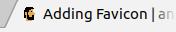

Hi this is my custom favicon and I adding to my blog with some steps:
With the image on *.png extension, I process to the web to make my *.ico file: http://www.favicon.cc/
Then download the generated file *.ico, and copy my favicon into the folder:
~ cp ~/Downloads/favicon.ico ~/mysites/andru255.github.io/themes/hugo-classic/favicon.ico
In my case I founded the head html tag in the file ~/mysites/andru255.github.io/themes/hugo-classic/layouts/partials/header.html, and I put above the tag title
<link rel="shortcut icon" type="image/x-icon" href="{{ "/favicon.ico" | relURL }}" />
With that code indicates to my browser My site has a custom favicon, please don’t put your default browser favicon.
Before submit my changes, I test before on localhost following the steps of getting up a local hugo server
Then, I need to build and submit my changes to my repo:
~ cd ~/my-sites/andru255.github.io/
~ hugo -D
~ git commit -am "feat(updating-the-theme): my favicon is already"
And must be show in a tab of your favorite browser like this:
